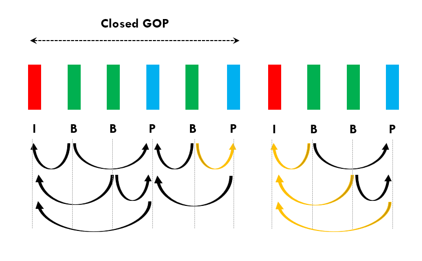
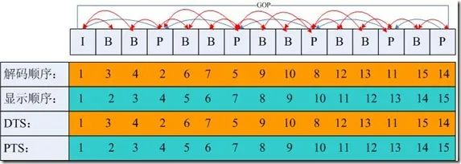
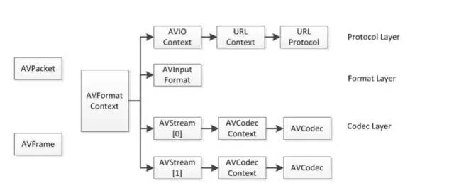

强大的多媒体视频处理工具 FFmpeg
- TAGS: Linux
FFmpeg 简介
FFmpeg 是领先的多媒体框架，能够解码、编码、转码、多路复用、解复用、流式传输、过滤和播放人类和机器创造的几乎任何内容。它支持最晦涩难懂的古老格式，直至最前沿。是一个完整的跨平台音视频录制、转换及串流方案。
官方网站： https://ffmpeg.org/
关于作者 Fabrice Bellard：
- 博客： https://bellard.org/
- 作品：
- 信号学：FFmpeg(开源多媒体系统)，5G
- 虚拟化领域：QEMU(开源机器仿真器和虚拟器)
- 数学领域: 圆周率，利用普通电脑计算出了PI的小数点后第2.7万亿位
- 编译原理：TinyCC
- 图形学领域：TinyGL
音视频基础
封装/解封装
- 封装：将视频码流/音频码流按照一定的格式存储在容器（文件）中，常见的封装格式为MP4、FLV、MKV等
- 解封装：封装的逆过程，将音视频文件分离为音频、视频等码流的过程，比如将MP4解封装为H.264和AAC
编码/解码
- 编码：将原始的视频数据（RGB、YUV等）压缩为视频码流，音频数据（PCM等） 压缩为音频码流的过程叫做编码。音\视频原始数据如果不经过压缩编码的话， 通常体积是非常大的，不利于存储和网络传输。常见的视频编码标准有H.263， H.264，MPEG2等，音频编码标准AAC，MP3，AC-3等
- 解码：编码的逆过程，将音\视频压缩编码的数据转为原始数据
软编（解）/硬编（解）
- 软编（解）：使用CPU进行编解码处理
- 硬编（解）：使用非CPU进行编解码，如显卡GPU、专用的DSP、FPGA等
软编（解）的时候CPU负载重，性能比硬编（解）低，但是通用性更好；硬编 （解）性能高但是兼容性问题比较突出，特别是在Android平台，碎片化严重， MediaCodec的坑也是不少
视频帧率
视频一秒显示的帧数
音频采样率
即取样频率，指录音设备在单位时间内对模拟信号采样的多少采样率越高，声音 的质量越好，还原越真实。目前主流采集卡上，采样频率一般共分为11025Hz、 22050Hz、24000Hz、44100Hz、48000Hz五个等级
不过人耳的分辨能力有限，太高的频率也区分不出来。人耳能感觉到的最低波长 为1.7cm，即20000Hz，因此要满足人耳的听觉要求，根据奈奎斯特采样定理，1s 采样至少需要40000次，即40kHz
音视频同步
音视频文件经过解封装后，音频/视频解码便开始独立进行，渲染也是独立的。 在音频流中播放速度按照音频采样率进行，视频流中播放速度按照帧率进行
理想情况下音视频独立播放是同步的，但实际上如果不做音视频同步处理，基本 上都会出现音画不同步的问题，造成的原因主要还是一帧的播放时间很难控制在 理想情况，音视频每帧的解码和渲染的耗时不同，可能造成每帧都存在一定误差 且误差会逐渐积累
音视频同步的三种方式：视频参考音频时钟、音频/视频参考外部时钟、音频参 考视频时钟，常用的是前两种，更详细的内容见后面FFmpeg音视频同步
码率
也叫比特率，单位时间内音频/视频的比特数量。比特率越高文件大小越大，消耗的带宽也就越多，一般用kbps（千比特/秒）来表示
音频比特率：采样率 * 采样精度 * 声道数
视频比特率：帧率 * 每帧数据大小
声道数
即声音的通道的数目。常见的有单声道，双声道，4声道，5.1声道等
采样位数
即采样值，采样精度，用来衡量声音波动变化的一个参数，一般有8bit，16bit等。
分辨率
视频画面的大小或尺寸
I、P、B帧
- I帧（内部编码帧）：使用帧内压缩，不使用运动补偿，不依赖其它帧所以可以独立解码为一幅完整的图像。I帧图像的压缩倍数相对较低
- P帧（前向预测帧）：采用帧间编码方式，同时利用了空间和时间上的相关性。P帧图像只采用前向时间预测，可以提高压缩效率和图像质量
- B帧（双向内插帧）：采用帧间编码方式且双向时间预测，提供了最高的压缩比。B帧既参考之前的I帧或P帧，也参考后面的P帧，所以会造成视频帧的解码顺序和显示顺序不同
GOP
GOP（Group Of Pictures）：一组连续的图像，由一个I帧开始和多个B/P帧组成，是编/解码器存取的基本单位
GOP分为闭合GOP和开放GOP
闭合GOP以一个被称为 IDR（即时解码刷新） 的I帧开始，当解码器遇到IDR帧时，会立即刷新解码图片缓冲区，在IDR之前出现的帧都不能作为该GOP内B/P帧的参考帧，这样就形成了图片序列的中断，可以防止错误的持续传递

开放GOP和闭合GOP相反，允许其内的帧参考其他GOP内的帧
两种GOP更详细的作用和差异: https://cloud.tencent.com/developer/article/1919128
DTS、PTS
- DTS（Decoding Time Stamp）：解码时间戳，告知解码器在什么时间点解码这一帧的数据
- PTS（Presentation Time Stamp）：显示时间戳，告知播放器什么时间点显示这一帧数据
下面这张图非常方便的辅助理解GOP，I/B/P帧和DTS和PTS

FFmpeg基础
常用so
- libavformat ：封装了Protocal/demuxer/muxer层，FFmpeg能否支持一种封装格式的视频的封装和解封装，依赖这个库。例如mp4、flv等容器的封装和解封装；rtmp、rtsp等协议的封装和解封装；
- libavcodec ：编码解码模块，封装了codec层。如libx264、FDK-AAC等库因为License的关系不会被FFmpeg带上，如需要可以通过第三方codec插件的形式注册添加到FFmpeg
- libavutil ：核心工具模块，提供音视频处理的一些基本操作，比如数学函数、错误码及错误处理、内存相关管理等
- libswresample ：音频重采样，可以对数字音频进行声道数、数据格式、采样率等多种基本信息的转换
- libswscale ：图像格式转换，比如将YUV转RGB等
- libavfilter ：音视频滤镜模块，包含了音频特效和视频特效的处理
重要结构体
- AVFormatContext ：在FFmpeg开发中是一个贯穿整个流程的数据结构，存储了整个音视频流和metadata信息
- AVCodecContext ：存储视频/音频流使用解码方式的相关数据
- AVStream ：存储一个视频/音频流的相关数据，每个AVStream对应一个AVCodecContext，每个AVCodecContext对应一个AVCodec，包含该视频/音频流对应的编解码器
- AVPacket ：保存了解复用（demuxer）之后的压缩数据和附加信息，比如pts，dts，duration等
- AVFrame ：保存解码后的原始数据

最重要的结构体大概就这几个，我们先知道有这些东西和作用即可，后面在开发中慢慢完善知识树
时间基（time_base）
在FFmpeg中，对时间基time_base的理解也是一个非常基础且重要的点
time_base是时间戳的单位，时间戳乘以时间基可以得到实际的时间值（以秒为单位），我们可以把time_base看作一个时钟脉冲，dts/pts等看作时钟脉冲的计数
例如某一个视频帧dts是40，pts是100，time_base是1/1000秒，那么该视频帧的解码时间点是40ms，显示时间点是100ms
FFmpeg有三种time_base，用ffprob探测音视频文件时可以看到有tbr，tbn，tbc
范例：使用 ffprobe 探测媒体文件格式
PS D:\download\baiducloud\拉勾：架构师的 36 项修炼> ffprobe.exe 'a.mp4' Input #0, mov,mp4,m4a,3gp,3g2,mj2, from 'a.mp4': ... ... Duration: 00:07:00.34, start: 0.000000, bitrate: 1728 kb/s Stream #0:0[0x1](eng): Video: h264 (Main) (avc1 / 0x316371), yuv420p(progressive), 1920x1080 [SAR 1:1 DAR 16:9], 1407 kb/s, 23.98 fps, 23.98 tbr, 24k tbn (default) ... ...
- tbn对应容器中的时间基，值为AVStream.time_base的倒数
- tbc对应编解码器中的时间基，值为AVCodecContext.time_base的倒数
- tbr是从视频流中猜算得到，可能是帧率或者场率（帧率的2倍）
命令范例
常用参数解释
- i 表示input，即输入文件 - f 表示format，即输出格式 - vn 表示vedio not，即输出不包含视频 - ar 设定采样率 - ac 设定声音的channel数 - ab 音频数据流量，一般选择32、64、96、128 - acodec 设定声音解码器 - y 覆盖输出文件
mp3
视频转换为 MP3 格式
范例： 视频转音频 mp3，音频编码 libmp3lam，音频采样频率 44100，2声道，声音比特率 32k，截取一段时间，声音放大 1.1 倍，音频1.7速度播放，文件存在直接覆盖
ffmpeg.exe -i "a.mp4" -acodec libmp3lame -ar 44100 -ac 2 -ab 32k -ss 00:04:30 -to 00:25:03 -af volume=1.1 -filter:a "atempo=1.7" -y b.mp3 ffmpeg.exe -i b.mp3 -vn -ar 44100 -ac 2 -ab 32k -filter:a "atempo=1.7" -y c.mp3
-i代表输入参数 -acodec aac（音频编码用AAC） -ar 设置音频采样频率 -ac 设置音频通道数 -ab 设定声音比特率 -ss 开始截取的时间点 -to 结束时间点 -t 00:02:00 截取音频时间长度 -af 'volume=2' 放大音量（volune=1表示正常音量,=0.5表示变为一半,=2表示变为2倍) -filter:a "atempo=2.0" 调整音频速率，倍率调整范围为[0.5, 2.0]。注意和 -ss -to -t 截取时间一起时，以速率时间为准，如 1.7 倍时间的起点。
#88MB mp4 转--> 18MB mp3 压缩-->4.5MB mp3 ffmpeg.exe -i 'a.mp4' -vn a.mp3 ffmpeg.exe -i 'a.mp4' -acodec libmp3lame -ar 44100 -ac 2 -ab 32k -y a.mp3 解释： -i代表输入参数 -acodec aac（音频编码用AAC） -ar 设置音频采样频率 -ac 设置音频通道数 -ab 设定声音比特率 -af 'volume=2' 放大音量（volune=1表示正常音量,=0.5表示变为一半,=2表示变为2倍) #音频文件截取指定时间部分 ffmpeg64.exe -i 124.mp3 -vn -acodec copy -ss 00:00:00 -t 00:01:32 output.mp3 解释 -ss 开始截取的时间点 -t 截取音频时间长度
其他
# 把MP4转换成MP3 ffmpeg -i old.mp4 new.mp3 # 将MP4转换成wav ffmpeg -i 606120.mp4 -f wav -vn test.wav # 生成16位、单声道、采样率为16k。其中“-f wav”是必不可少的，否则生成的就是pcm数据，而非wav。 ffmpeg -i 123.mp4 -acodec pcm_s16le -f s16le -ac 1 -ar 16000 -f wav 123.wav # 如果只想获得原始的pcm文件，可以用下面的命令： ffmpeg -i 123.mp4 -acodec pcm_s16le -f s16le -ac 1 -ar 16000 123.pcm # 从视频中提取aac文件 ffmpeg -i 1.mp4 -vn -y -acodec copy vn.aac
音频格式转换：wav转mp3
ffmpeg -i input.wav -acodec libmp3lame -aq 4 -ar 44100 -ab 320k -ac 2 output.mp3 # 将双通道wav转换成pcm: ffmpeg -y -i 1.wav -acodec pcm_s16le -f s16le -ac 1 -ar 16000 1.pcm # pcm转换成wav ffmpeg -f s16le -ar 16000 -ac 1 -i input.pcm output.wav # s16le：有符号、整形、小端 # 把mp3转换为wav文件 ffmpeg -i input.mp3 output.wav
删除静音片段
ffmpeg -i vn436.aac -af silenceremove=stop_periods=-1:stop_duration=1:stop_threshold=-30dB vn436.aac # 经过测试，可以有效删除静音片段，可以用于aac音频格式。 # stop_duration:静音片段阈值，超过多少秒就会删除静音片段。
增大音量
#-af 'volume=2' 放大音量（volune=1表示正常音量,=0.5表示变为一半,=2表示变为2倍)
音频拼接
# 音频拼接,将多个MP3按顺序拼接生成一个mp3 ffmpeg -i "concat:1.mp3|ding.mp3|2.mp3" -acodec copy output.mp3
音频补白
# 手动生成一条10秒长的空白音频 ：test.mp3 ffmpeg -f lavfi -t 10 -i anullsrc test.mp3 -y
判断是否有音轨-ffprobe
ffprobe -i INPUT -show_streams -select_streams a -loglevel error # loglevel error，控制日志打印级别
调整音视频播放速度
调整视频速率
#调整视频速率的原理为：修改视频的pts，dts ffmpeg -i input.mkv -an -filter:v "setpts=0.5*PTS" output.mkv #注意：视频调整的速度倍率范围为：[0.25, 4] #如果只调整视频的话最好把音频禁掉。 #对视频进行加速时，如果不想丢帧，可以用-r 参数指定输出视频FPS，方法如下: ffmpeg -i input.mkv -an -r 60 -filter:v "setpts=2.0*PTS" output.mkv
调整音频速率
#调整视频速率的原理为：简单的方法是调整音频采样率，但是这种方法会改变音色， 一般采用通过对原音进行重采样，差值等方法 ffmpeg -i input.mkv -filter:a "atempo=2.0" -vn output.mkv #注意：倍率调整范围为[0.5, 2.0] #调整4倍可采用以下方法 #ffmpeg -i input.mkv -filter:a "atempo=2.0,atempo=2.0" -vn output.mkv #如果需要同时调整音频和视频，可以采用如下的方式来实现： ffmpeg -i input.mkv -filter_complex "[0:v]setpts=0.5*PTS[v];[0:a]atempo=2.0[a]" -map "[v]" -map "[a]" output.mkv
mp4
压缩
# 88MB mp4 压缩--> 24MB mp4 ffmpeg -i input.mp4 -vf scale=1280:-1 -c:v libx264 -preset veryslow -crf 24 output.mp4
合并 mp4 文件 要使用ffmpeg合并两个MP4文件，你可以使用concat协议或者concat过滤器。以下是两种方法的示例： 范例：使用concat协议
cat input.txt file '/path/to/first_video.mp4' file '/path/to/second_video.mp4' ffmpeg -f concat -safe 0 -i input.txt -c copy output.mp4
png
压缩
图片压缩工具有很多，这里使用 FFmpeg 视频处理工具
透明度/动画 支持
- jpg 不支持透明度，不支持动画
- png 支持透明度，支持动画（apng，效果不好）
- webp 支持透明度，支持动画
浏览器支持
- jpg 现代浏览器都支持
- png 现代浏览器都支持
- webp 大部分现代浏览器支持
范例： 300KB png 格式文件压缩测试
#png格式 有中间调色板，300-->102KB ffmpeg -i t.png -vf palettegen=max_colors=256:stats_mode=single -y out_3.png ffmpeg -i t.png -i out_3.png -lavfi "[0][1:v] paletteuse" -pix_fmt pal8 -y c.png #webp格式 300-->32KB #-lossless 是设置无损压缩 ffmpeg -i t.png -vf scale=iw:ih -codec libwebp -lossless 0 -quality 75 -y d.png #jpg格式 300-->78KB # -q:v选项来设置压缩质量，值为2。这个值范围为0到31，其中0为最高质量，31为最低质量。 ffmpeg -i t.png -q:v 4 -y output.jpg #改变大小 #图片压缩为尺寸为640x480像素 ffmpeg -i t.png -vf scale=640:480 -y output.jpg #单纯调整图片大小，无损压缩把图片宽高缩小2倍iw/2:ih/2 ffmpeg -i t.png -vf scale=iw/2:ih/2 -y a.png # 静态输出 -loglevel quiet
范例： 准备 powershell 脚本 png-compress.ps1
# 指定包含 PNG 图片的目录 $pngSourceDirectory = "images" # 指定输出目录 $pngDestDirectory = "d_images" # 复制文件夹及其内容 Copy-Item -Path $pngSourceDirectory -Destination $pngDestDirectory -Recurse -Force # 确保输出目录存在 if (!(Test-Path -Path $pngDestDirectory -PathType Container)) { New-Item -ItemType Directory -Force -Path $pngDestDirectory } # 获取目录下的所有 PNG 文件 $pngFiles = Get-ChildItem -Path $pngSourceDirectory -Filter *.png # 遍历每个 PNG 文件 foreach ($pngFile in $pngFiles) { # 定义输入文件路径 $inputPath = $pngFile.FullName # 定义输出文件路径，使用 "dest 目录/文件名" 的格式 $outputPath = Join-Path $pngDestDirectory ($pngFile.BaseName + ".png") # 构建 FFmpeg 命令 $ffmpegCommand = "ffmpeg -i `"$inputPath`" -vf 'palettegen=max_colors=256:stats_mode=single' -loglevel quiet -y -y out_3.png; ffmpeg -i `"$inputPath`" -i out_3.png -lavfi '[0][1:v] paletteuse' -pix_fmt pal8 -loglevel quiet -y `"$outputPath`"; Remove-Item -Path out_3.png -Force" # 执行 FFmpeg 命令 Invoke-Expression $ffmpegCommand # 可选：打印执行的信息 Write-Host "Processed $($pngFile.Name) -> $($pngFile.BaseName).png in $pngDestDirectory" }
运行脚本。你可以使用以下命令之一来执行脚本：
# 如果你的执行策略允许运行脚本，并且你对脚本所在的目录有信任，你可以直接调用脚本： .\png-compress.ps1 #如果你需要绕过执行策略（请小心使用，确保你信任脚本的内容），你可以使用 PowerShell -NoProfile -ExecutionPolicy Bypass -File .\png-compress.ps1
gif
视频 与 gif转换
- 截取5秒长度生成gif
ffmpeg -t 5 -ss 00:00:02 -f gif -i 8_9f6fa300bacded7b.mp4 /data/dev/think_file/html/8.gif #-ss 00:00:02： 从第二秒开始 #-t 5: 持续5秒 #-f gif: 指定文件格式为gif(因为输出文件名的后缀是gif,所以这个参数可以不添加)
- 生成指定宽高的gif
ffmpeg -v quiet -t 5 -ss 00:00:02 -i 8_9f6fa300bacded7b.mp4 -s 320x180 -y /data/dev/think_file/html/8_2.gif #-v quiet: 不显示版本和处理过程等log信息 #-s 320x180: 指定生成的gif图的宽高 #-y : 文件存在时自动覆盖，不再询问
- 生成gif时指定fps
查看原视频的fps:
ffprobe -v error -select_streams v -of default=noprint_wrappers=1:nokey=1 -show_entries stream=r_frame_rate 8_9f6fa300bacded7b.mp4 #原视频的fps并不高，值为30 ffmpeg -v quiet -t 5 -ss 00:00:02 -i 8_9f6fa300bacded7b.mp4 -f gif -r 15 -y /data/dev/think_file/html/8_3.gif # -r: 指定fps
- gif转mp4
ffmpeg -i 8_2.gif 8_2.mp4
压缩
- 查看原gif的宽高及大小
[root@blog img]$ file dog.gif dog.gif: GIF image data, version 89a, 250 x 250
- 缩放gif
ffmpeg -i dog.gif -s 120x120 dog_tmb.gif
压缩
Gif压缩工具Gifsicle下载地址：https://eternallybored.org/misc/gifsicle/
加入到 Path 变量中
gifsicle XXX.gif --optimize=3 --colors 128 --lossy=1000 -o NEW.gif # --optimize 优化等级[1,2,3] --lossy=有损优化等级[0~无穷] --colors Num Num必须在2到256之间
MP4转Gif
Ffmpeg+Git Bash+Gifsicle组合转为超小体积的Gif
gif.sh
set -e # 全局设定，fps帧数，scale分辨率为320 fps=8 scale=320:-1 scale_=320 interpolation=lanczos # max_colors设置彩色数量，彩色越小gif体积越小 max_colors=128 # up to 256 reserve_transparent=on stats_mode=diff # chosen from [full, diff, single] # for paletteuse dither=sierra2 # chosen from [bayer, heckbert, floyd_steinberg, sierra2, sierra2_4a, none] bayer_scale=5 # [0, 5]. only works when dither=bayer. higher means more color banding but less crosshatch pattern and smaller file size diff_mode=rectangle # chosen from [rectangle, none] new=on # when stats_mode=single and new=on, each frame uses different palette # 文件用时间命名 time=$(date +"%Y-%m-%d--%H-%M-%S") # 设定Gif播放率，0.5为2倍播放，1为正常播放，4为放慢4倍播放 ffmpeg -i $1 -vf "setpts=0.5*PTS" output_temp.mp4 # 使用上面的参数加入到命令中执行，$1为输入的文件名 ffmpeg -i output_temp.mp4 -vf "fps=$fps,scale=$scale:flags=$interpolation,split[split1][split2];[split1]palettegen=max_colors=$max_colors:reserve_transparent=$reserve_transparent:stats_mode=$stats_mode[pal];[split2][pal]paletteuse=dither=$dither:bayer_scale=$bayer_scale:diff_mode=$diff_mode:new=$new" -y new_mp4_temp.gif # 删除产生的临时文件 rm output_temp.mp4 # --optimize 优化等级[1,2,3] --lossy=有损优化等级[0~无穷] gifsicle new_mp4_temp.gif --optimize=3 --lossy=100 -o net_output.gif # 删除产生的临时文件 rm new_mp4_temp.gif # 对转换后的文件进行重命名 mv net_output.gif $time\_fps=$fps\_scale=$scale_\_max_colors=$max_colors.gif
使用：
gif.sh a.mp4
类似压缩方法
尝试把 demo.mp4 生成高质量的 gif. 同样 fps=10, lanczos 插值到 480P 分辨率.
ffmpeg -i demo.mp4 -vf "fps=10,scale=480:-1:flags=lanczos,split[split1][split2];[split1]palettegen[pal];[split2][pal]paletteuse=dither=none" demo_dither_none.gif
- -i demo.mp4：指定输入文件为 demo.mp4。
- -vf：指定视频滤镜链。这条命令中包含多个滤镜，它们通过分号和标签（labels）串联起来。
- fps=10：将视频的帧率限制为 10 帧每秒。实际上，由于你最终是要生成 GIF（通常只包含一帧或多帧的动画），这个设置对最终结果的影响不大，但它会确保 ffmpeg 在处理过程中以这个帧率来工作。
- scale=480:-1:flags=lanczos：调整视频的大小，使其宽度为 480 像素，高度自动计算以保持原始纵横比。lanczos 是一个高质量的缩放算法。
- split[split1][split2]：将视频流分割成两个相同的流，分别标记为 split1 和 split2。这允许你对同一个视频流进行不同的处理。
- [split1]palettegen[pal]：使用 split1 流的视频帧来生成一个调色板（palette）。调色板是 GIF 动画中用于定义所有颜色的集合。这个调色板被标记为 pal。
- [split2][pal]paletteuse=dither=none：使用 split2 流的视频帧和前面生成的调色板 pal 来创建一个 GIF 动画。dither=none 表示不使用任何抖动算法来平滑颜色过渡。抖动通常用于减少颜色数量时的颜色近似，但在这个设置中它被禁用了。
- demo_dither_none.gif：指定输出文件的名称
最终，这条命令会从 demo.mp4 中提取一帧（实际上，由于 fps 滤镜和可能的默认行为，可能会提取多帧，但通常 GIF 生成只使用第一帧），将其大小调整为宽度 480 像素，生成一个调色板，并使用这个调色板将视频帧转换为 GIF 格式，同时禁用颜色抖动。
打开抖动
gifgen.sh:
set -e # global filter fps=10 scale=480:-1 interpolation=lanczos # for palettegen max_colors=256 # up to 256 reserve_transparent=on stats_mode=full # chosen from [full, diff, single] # for paletteuse dither=bayer # chosen from [bayer, heckbert, floyd_steinberg, sierra2, sierra2_4a, none] bayer_scale=3 # [0, 5]. only works when dither=bayer. higher means more color banding but less crosshatch pattern and smaller file size diff_mode=rectangle # chosen from [rectangle, none] new=off # when stats_mode=single and new=on, each frame uses different palette ffmpeg -i $1 -vf "fps=$fps,scale=$scale:flags=$interpolation,split[split1][split2];[split1]palettegen=max_colors=$max_colors:reserve_transparent=$reserve_transparent:stats_mode=$stats_mode[pal];[split2][pal]paletteuse=dither=$dither:bayer_scale=$bayer_scale:diff_mode=$diff_mode:new=$new" -y $2
使用
./gifgen.sh demo.mp4 res.gif